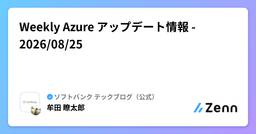
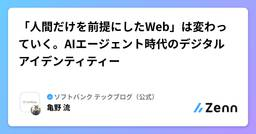

ソフトバンク テックブログ（公式）のフィード
https://zenn.dev/p/softbank
ソフトバンクのエンジニアが、ソフトバンクの業務・サービスを支える技術をテーマに、現場の知見や取り組みを発信する技術ブログです。 2026年３月以前のブログ https://www.softbank.jp/biz/blog/cloud-technology/
フィード

Weekly Azure アップデート情報 - 2026/08/25
ソフトバンク テックブログ（公式）のフィード
Weekly Azure アップデート情報 - 2026/08/25 ～[プレビュー] Azure App Service のエージェント向け Markdown～皆さま、こんにちは。Weekly Azure では、今週もMicrosoft Azureのプロダクトアップデート情報をお届けします。先週 (2026/08/14 - 2026/08/20) の主な Azure アップデート情報をお送りいたします。 今週の注目アップデート ・[プレビュー] Azure App Service のエージェント向け MarkdownAzure App Service におけるエ...
2日前

【AI VS 津軽弁】AIに「おばあちゃんの津軽弁」を聴かせてみたら未知の言語が爆誕した話
ソフトバンク テックブログ（公式）のフィード
1. はじめにこんにちは、ソフトバンクの花立千紘です。突然ですが、皆さんは青森県の人が話す「津軽弁」を聴いたことがありますか？ネットやテレビではよく「もはやフランス語や韓国語に聞こえる」などとネタにされがちです。しかし、生まれは青森・育ちは完全な神奈川県である私（津軽弁ヒアリングレベル3割）は思いました。「人間には外国語に聞こえても、最新AIならどんなに激しい訛りでも『日本語』として完璧に聞き取れるのでは？」そこで前回の帰省時、おばあちゃんにスマートフォンを渡し、検証を行ってみました。!※本記事は執筆時点（2026年8月）の情報を元に作成しています。 2. 検証...
4日前

「人間だけを前提にしたWeb」は変わっていく。AIエージェント時代のデジタルアイデンティティー
ソフトバンク テックブログ（公式）のフィード
MyData Japan 20262026年7月29日、一橋講堂で開催された MyData Japan 2026 - Revisiting MyData - に参加しました。MyData Japanは、個人を起点とした持続可能かつ倫理的なデータ活用について議論するカンファレンスです。2026年のテーマは「Revisiting MyData」です。AIエージェントの台頭や個人情報保護法の改正など、データを取り巻く環境が大きく変わる中で、あらためて「人間中心のデータエコシステムとは何か」を問い直すことがテーマになっています。この記事では、その中でも特に気になっていたTrack A...
5日前

Weekly Google Cloud アップデート情報 - 2026年9月8日
ソフトバンク テックブログ（公式）のフィード
Weekly Google Cloud アップデート情報 - 2026年9月8日 ～ Gemini Enterprise: コンテンツポリシーで機密データを保護 ～皆さま、こんにちは。先週 (2026/08/28 - 2026/09/03) の主な Google Cloud（旧GCP）のアップデート情報を紹介します。※本記事の引用元:Google Cloud リリースノート 注目のアップデートGemini Enterprise: コンテンツポリシーで機密データを保護Sensitive Data Protection コンテンツポリシーを Gemini Enterpri...
5日前

Weekly AWS アップデート情報 - 2026年9月7日
ソフトバンク テックブログ（公式）のフィード
皆さま、こんにちは。Weekly AWSでは、毎週 AWS プロダクトのアップデート情報をお届けしています。それでは、先週 (8月31日～9月6日) の主な AWS アップデート情報を紹介します。 今週の注目アップデート Amazon Quick が、自然言語でカスタムアプリケーションを構築可能にAmazon Quick で、自然言語で説明するだけでカスタムアプリケーションを構築できる機能が一般提供されました。これにより、プロジェクトトラッカー、顧客ダッシュボード、トレーニングポータルなどを、コードを記述することなく数分で作成可能です。Quick は、Salesforc...
6日前

Gemini Enterprise ワークフロービルダーをさっそく触ってみた ― "人間の判断も入れられるWFに生まれ変わった"
ソフトバンク テックブログ（公式）のフィード
1. はじめにGemini Enterprise（以下、GE）ワークフロービルダーの、”ワークフロー機能”（Workflows、旧Agent Designer V3とも表現）を動かしました。この記事では、実際の画面で確認できたことと、私が作ったワークフロービルダーの一例を紹介します。まだ触り始めて間もない段階での所感です。そのうえで先に結論を書くと、これは単なるノーコードエージェントの新バージョンではありません。エージェントをワークフロー形式で作り動かすことができる新しい機能として捉えております。※ワークフロービルダーは9/3に一般提供（GA）されています。本記事の内容は 20...
8日前
「デザインハーネス 2nd」にソフトバンクのUI/UXデザイナー窪内彩佳が登壇します！
ソフトバンク テックブログ（公式）のフィード
「デザインハーネス 2nd」にソフトバンクのUI/UXデザイナー窪内彩佳が登壇します！2026年9月15日（火）に開催される「デザインハーネス 2nd 〜デザインにおけるハーネスエンジニアリング〜」に、ソフトバンク株式会社のUI/UXデザイナー 窪内彩佳が登壇します。本記事では、イベントの概要と窪内の登壇内容を紹介します。 イベント概要「デザインハーネス」は、AIエージェントの力を人の判断で方向付けながら、デザインプロセスを前に進めるための考え方です。デザインシステムや設計知識、検証、ワークフローなどを組み合わせ、プロダクトやサービスのデザインをAIエージェントと共に進め...
10日前
Weekly AWS アップデート情報 - 2026年8月31日
ソフトバンク テックブログ（公式）のフィード
皆さま、こんにちは。Weekly AWSでは、毎週 AWS プロダクトのアップデート情報をお届けしています。それでは、先週 (8月24日～30日) の主な AWS アップデート情報を紹介します。 今週の注目アップデート Amazon Redshift が Agent Toolkit for AWS と統合し、AI によるデータウェアハウス管理を支援Amazon Redshift が Agent Toolkit for AWS と統合されました。これにより、Claude Code、Kiro、Cursor などの AI エージェントから直接、Amazon Redshift デ...
11日前
Weekly Google Cloud アップデート情報 - 2026年9月1日
ソフトバンク テックブログ（公式）のフィード
Weekly Google Cloud アップデート情報 - 2026年9月1日皆さま、こんにちは。先週 (2026/08/21 - 2026/08/27) の主な Google Cloud（旧GCP）のアップデート情報を紹介します。※本記事の引用元:Google Cloud リリースノート 注目のアップデートGemini Enterprise: 標準エマージングマーケット版での AI 開発者向けツールGemini Enterprise Standard エマージングマーケット版では、AI 開発者向けツール機能が利用可能です。機能にアクセスするには、プロジェクトを、毎...
11日前
Weekly Azure アップデート情報 - 2026/08/19
ソフトバンク テックブログ（公式）のフィード
Weekly Azure アップデート情報 - 2026/08/19 ～[一般公開] Azure Databricks の Unity AI Gateway が一般提供開始～皆さま、こんにちは。Weekly Azure では、今週もMicrosoft Azureのプロダクトアップデート情報をお届けします。今回は先々週および先週の2週間分 (2026/07/24 - 2026/08/13) の主な Azure アップデート情報をお送りいたします。 今週の注目アップデート ・[一般公開] Azure Databricks の Unity AI Gateway が一般提供開...
11日前
Weekly Google Cloud アップデート情報 - 2026年8月25日
ソフトバンク テックブログ（公式）のフィード
Weekly Google Cloud アップデート情報 - 2026年8月25日皆さま、こんにちは。先週 (2026/08/14 - 2026/08/20) の主な Google Cloud（旧GCP）のアップデート情報を紹介します。※本記事の引用元:Google Cloud リリースノート 注目のアップデートGemini Enterprise: A2UI および A2A エージェント登録の一般提供開始Gemini Enterprise で、A2UI および A2A エージェントの登録が一般提供されました。これには、A2UI バージョン v0.9 のサポートも含まれ...
18日前
Weekly AWS アップデート情報 - 2026年8月24日
ソフトバンク テックブログ（公式）のフィード
皆さま、こんにちは。Weekly AWSでは、毎週 AWS プロダクトのアップデート情報をお届けしています。それでは、先週 (8月17日～23日) の主な AWS アップデート情報を紹介します。 今週の注目アップデート IAM Policy Autopilot が、Terraform plan ファイルに対応IAM Policy Autopilot が、Terraform plan ファイルから直接ベースライン IAM ポリシーを生成できるようになりました。IAM Policy Autopilot は、re:Invent 2025 で発表されたオープンソースツールで、コー...
18日前
AIとの対話履歴を資産にする。DDR（Design Decision Record）自動記録の仕組み
ソフトバンク テックブログ（公式）のフィード
はじめにこんにちは！ソフトバンク社内のデザインチームに所属しているデザイナーの窪内です。私たちのチームでは、デザインプロセスにAIを活用し、AIチャットやAIコーディングツールを使ってデザインをする機会が増えています。この記事を読んでくださっている方の中にも、AIとの対話の中で提案や修正指示をしながらデザインされている方がいらっしゃると思います。しかし、最終的なデザインだけが残り、「なぜそのような修正をしたのか、なぜその案を採用したのか、どの案を検討して見送ったのか」といった「意思決定」が後からたどれない、といったことはないでしょうか。私たちのチーム内でも、あるプロダクトの...
23日前
Weekly Azure アップデート情報 - 2026/08/05
ソフトバンク テックブログ（公式）のフィード
Weekly Azure アップデート情報 - 2026/08/05 ～[プレビュー] Azure API Management の AI Gateway～皆さま、こんにちは。Weekly Azure では、今週もMicrosoft Azureのプロダクトアップデート情報をお届けします。先週 (2026/07/17 - 2026/07/23) の主な Azure アップデート情報をお送りいたします。 今週の注目アップデート ・[プレビュー] Azure API Management の AI GatewayAzure API Management の AI Gat...
25日前
Weekly Google Cloud アップデート情報 - 2026年8月18日
ソフトバンク テックブログ（公式）のフィード
Weekly Google Cloud アップデート情報 - 2026年8月18日皆さま、こんにちは。先週 (2026/08/07 - 2026/08/13) の主な Google Cloud（旧GCP）のアップデート情報を紹介します。※本記事の引用元:Google Cloud リリースノート 注目のアップデートGemini Enterprise: カスタムスキルの作成、アップロード、共有Gemini Enterprise では、カスタムスキルを作成、アップロード、共有することが可能です。スキルは、Gemini Enterprise アシスタントが特定のタスクを実行...
1ヶ月前
Weekly AWS アップデート情報 - 2026年8月17日
ソフトバンク テックブログ（公式）のフィード
皆さま、こんにちは。Weekly AWSでは、毎週 AWS プロダクトのアップデート情報をお届けしています。それでは、先週 (8月10日～16日) の主な AWS アップデート情報を紹介します。 今週の注目アップデート Amazon S3 が、Access Denied エラーメッセージにポリシー詳細を含めるようになりましたAmazon S3 は、同一アカウントおよび同一組織からのリクエストに対する HTTP 403 Access Denied エラーメッセージに、特定の AWS Identity and Access Management (IAM) ポリシーおよび A...
1ヶ月前
Weekly Google Cloud アップデート情報 - 2026年8月12日
ソフトバンク テックブログ（公式）のフィード
Weekly Google Cloud アップデート情報 - 2026年8月12日 ～ Gemini Enterprise: 新しいデータストアと新しいアクションのサポート（パブリックプレビュー） ～皆さま、こんにちは。先週 (2026/07/31 - 2026/08/06) の主な Google Cloud（旧GCP）のアップデート情報を紹介します。※本記事の引用元:Google Cloud リリースノート 注目のアップデートGemini Enterprise: 新しいデータストアと新しいアクションのサポート（パブリックプレビュー）Gemini Enterprise...
1ヶ月前
Weekly AWS アップデート情報 - 2026年8月10日
ソフトバンク テックブログ（公式）のフィード
皆さま、こんにちは。Weekly AWSでは、毎週 AWS プロダクトのアップデート情報をお届けしています。それでは、先週 (8月3日～9日) の主な AWS アップデート情報を紹介します。 今週の注目アップデート AWS Security Hub Extended に10番目のカテゴリとしてサプライチェーンセキュリティが追加AWS Security Hub Extended プランに、10番目のセキュリティカテゴリとして「サプライチェーンセキュリティ」が追加され、パートナーとして Chainguard と Socket が加わりました。今回のアップデートにより、アプリ...
1ヶ月前
OpenAIのWeb検索APIが画像も検索できるようになった
ソフトバンク テックブログ（公式）のフィード
ソフトバンクのCHENです。普段は、データ構造化ツール「TASUKI Annotation」の技術研究＆全社RAG基盤に携わっています。あわせて生成AI・エージェント技術の探索にも取り組み、実務投入を見据えた技術検証を行っています。本記事では、OpenAI の Web検索ツール（web_search）が新たに画像も返せるようになった点を、実際にAPIを叩いて検証しました。 TL;DR使い方：web_search に search_content_types と image_settings を追加するだけで、画像URL・出典ページURL・サムネイルがまとめて返ってきます。...
1ヶ月前
ユーザーはなぜ迷うのか？アフォーダンスとシグニファイアで考える設計
ソフトバンク テックブログ（公式）のフィード
はじめに「これ、押せるの？」Webサービスやアプリを使っていて、そんなふうに手が止まったことはないでしょうか。リンクなのか、ただのテキストなのか。カード全体がクリックできるのか、ボタンだけなのか。アイコンは何を意味しているのか。機能としては存在しているのに、ユーザーに「使える」と伝わっていないUIは意外と多くあります。この “使えるのに気づくことができない“ 問題を考えるうえで役立つのが、 アフォーダンス と シグニファイア という考え方です。この記事では、この 2 つの違いを整理しながら、ユーザーを迷わせないUIを作るために何を意識すればよいのかを考えていきます。...
1ヶ月前